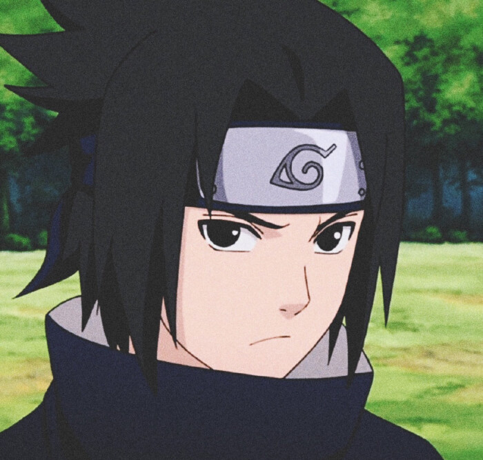
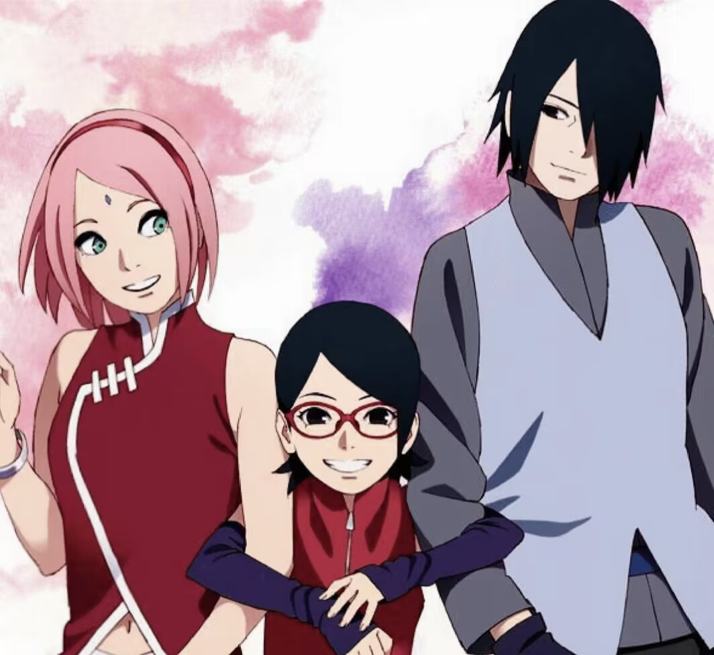

.jpg) |
| 角色背景 |
.jpg) |
佐助出生于木叶村的宇智波一族，父亲是宇智波富岳，母亲是宇智波美琴。他自幼在哥哥宇智波鼬的关爱与教导下成长，但在经历了宇智波一族被鼬灭门的悲剧后，佐助的内心充满了仇恨，立誓要向哥哥复仇. |
| 性格特点 |
|  |
佐助性格冷漠、高傲，给人一种拒人于千里之外的感觉。他执着于追求力量，在复仇之路上曾一度迷失自我，但在与鸣人的羁绊以及知晓家族真相后，逐渐变得成熟、有担当，明白了守护的意义. |
| 角色能力 |
.jpg) |
写轮眼：佐助拥有永恒万花筒写轮眼，获得了如天照、炎遁·加具土命、须佐能乎等强大的忍术.
雷遁术：佐助擅长雷遁忍术，他在千鸟的基础上开发了千鸟流、千鸟锐枪等多种衍生技能.
剑术：佐助的剑术造诣颇高，能够熟练地使用草薙剑进行战斗，将剑术与忍术、写轮眼的能力相结合，创造出独特而强大的攻击方式. |
| 成长历程 |
|  |
忍者学校时期：佐助在忍者学校成绩优异，毕业后加入卡卡西带领的第七班，在执行任务的过程中不断成长.
追随大蛇丸：为了获得更强大的力量向鼬复仇，佐助叛逃出木叶村，追随大蛇丸。
成立鹰小队：佐助杀了哥哥鼬以后了解到了家族被灭门的真相，开启了万花筒写轮眼.知道哥哥的不易与深沉的爱后成立了鹰小队，开始了摧毁木叶村的计划。
回归木叶：在经历了一系列的事件后，佐助最终选择与鸣人一起并肩作战，共同对抗敌人，为守护木叶村和忍者世界贡献了自己的力量，战争结束后，佐助与小樱结婚，并育有一女。 |
| 图片来源网络，如有侵权请联系删除。（点击可返回首页） |